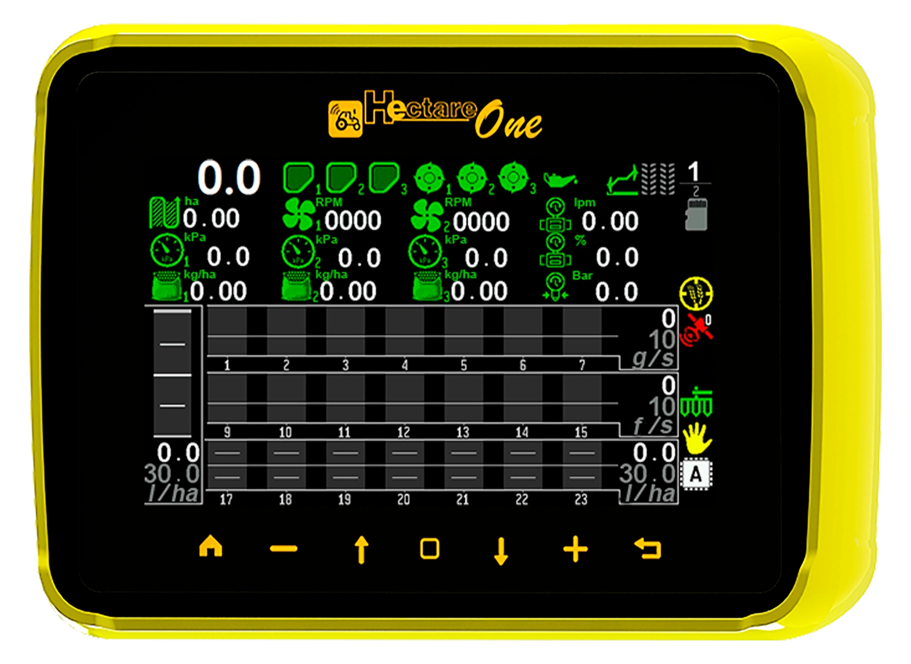

Hectare-Monitore
Hectare One
Aussaatüberwachungs-Panel, 7-Zoll-Bildschirm, sieben Tasten und Touch
Was das System Hectare One leistet → Gesamte Anleitung auf einer Seite

Erste Schritte
- Was das System Hectare One leistetDas Aussaat-Überwachungssystem mit dem Panel Hectare One auf einer Seite — was es überwacht, was es antreibt und was es aufzeichnet.
- LieferumfangDas Mindestsystem, die optionalen Geräte, die eine Maschine tragen kann, und die Kabel, die sie verbinden.
- SicherheitWas das Panel in Bewegung setzen kann, wer es bedienen darf und von wo aus, und wie Sie das Panel selbst behandeln. Vor dem ersten Einschalten lesen.
- Das Panel und seine sieben TastenWas sich auf der Vorder- und auf der Rückseite des Hectare One befindet und was jede der sieben Tasten bewirkt.
- EinschaltenWas das Panel nach dem Einschalten tut, mit welcher Zugriffsebene es startet und was ein ungewöhnlich lang stehendes Startbild bedeutet.
- Menüs, Kontextmenüs, Ziffernblock und FensterDie fünf Dinge, über die am Panel alles geschieht — Arbeitsbildschirme, Hauptmenü, Kontextmenü eines Geräts, Ziffernblock und die Fenster, die fragen oder etwas mitteilen.
- Kurzanleitung — vorbereiten und losfahrenDie Reihenfolge, in der Sie die Maschine bereitmachen, was Sie vor dem Feld prüfen, was beim Losfahren geschieht und was Sie während der Arbeit beobachten.
- System nach der Installation prüfenEin einmaliger Ablauf für den Installateur — Schritt für Schritt nachweisen, dass jedes Gerät antwortet, jeder Kornsensor in seiner eigenen Reihe sitzt und die Maschine richtig anzeigt, und das Ergebnis festhalten.
- Zu den Bildern in dieser AnleitungDie Bildschirme in dieser Anleitung wurden an einem Prüfstand aufgenommen. Was auf ihnen zum Prüfstand und nicht zu Ihrer Maschine gehört.
Die Bildschirme
- Der StartbildschirmWas jeder Teil des Startbildschirms ist — Geschwindigkeit, Anzeigen, Fläche, Mengen, die Sektionsdiagramme — an einer stehenden Drillmaschine und an einem Einzelkornsägerät bei der Arbeit.
- Das Sektionsdiagramm — Säulen, Linie und FarbenWie Sie die Säulen des Startbildschirms im Modus „Einzelkorn“ und im Modus „Durchfluss“ lesen und was die Überwachungslinie bedeutet.
- Säulenfarben und die vier Zustände einer SektionWas jede Farbe und jedes Symbol einer Säule im Sektionsdiagramm bedeutet und welche vier Kombinationen aus Überwachung und Produktausbringung eine Sektion haben kann.
- Der Startbildschirm an verschiedenen MaschinenDasselbe Panel an einem Einzelkornsägerät, an einer Drillmaschine und an Maschinen mit 44 und 96 Reihen — im Stillstand und bei der Arbeit —, damit Sie Ihren eigenen Bildschirm wiedererkennen.
- Anzeigen des StartbildschirmsJede Anzeige des Startbildschirms mit allen ihren Zuständen — was Sie sehen, was es bedeutet, was zu tun ist.
- Der zweite StartbildschirmDer Startbildschirm für eine Maschine ohne Kornsensoren — was auf ihm steht, wie Sie ihn öffnen und schließen und was seine Pfeilspitzen und Kacheln bewirken.
- Die Arbeitsbildschirme und wie Sie zwischen ihnen wechselnDie vier Arbeitsbildschirme in ihrem Kreis, der zweite Startbildschirm daneben und jeder Weg — per Taste oder Wischen — von einem zum anderen.
- Der Bildschirm TabelleDie Messwerte jeder Sektion in Zahlen — welche Tabellen Ihre Maschine hat, was jede Spalte bedeutet und wie Sie die Farben lesen.
- Der Bildschirm StatistikDer Bericht über die Arbeit auf jedem Feld, Block für Block und Zeile für Zeile — und das Menü, das das Feld wählt, den Bericht speichert und ihn löscht.
- Der Bildschirm MotorenDie Elektromotoren der Dosierer und die Fahrgassen-Aktuatoren der Maschine, je eine Kachel — wie Sie eine Kachel lesen und wie Sie zu den Einstellungen eines Motors gelangen.
So geht's
- Sollmenge ändernDie Menge, die das Panel hält und überwacht, vom Startbildschirm aus während der Aussaat anheben oder absenken — mit den Tasten oder per Berührung.
- Produktausbringung von Hand sperrenDie gesamte Produktausbringung mit einem langen Tastendruck anhalten und wieder starten — was die Sperre bewirkt und woran Sie sehen, dass sie eingeschaltet ist.
- Alarmschwelle automatisch einstellenDas Panel die Alarmschwelle der Diagramme aus der Menge setzen lassen, die die Maschine wirklich sät, statt sie zu schätzen — Drillmaschinen im Modus „Durchfluss“ oder „Hybrid“.
- Sensor in die Überwachung nehmen oder herausnehmenDas Panel einen Sensor nicht mehr überwachen lassen — eine abgeschaltete Sektion, ein defekter Sensor — und ihn später wieder aufnehmen.
- Werte des Bildschirms Tabelle zurücksetzenDie Korn- und Düngerzähler des Bildschirms Tabelle auf null setzen — für ein neues Feld oder eine neue Saatgutpartie —, ohne die Feldstatistik anzutasten.
- Scheiben mit Korn füllenDie Saatscheiben eines Einzelkornsägeräts mit Dosiermotoren drehen, bis jede Scheibe Saatgut trägt, damit die Aussaat vom ersten Meter an beginnt — wie Sie es starten und das Ergebnis lesen.
- Fahrgassenrhythmus einstellenWas ein Fahrgassenrhythmus ist, für Ihre Drillmaschine und Ihre Spritze berechnet, und wie Sie ihn Schritt für Schritt am Panel einstellen.
- Zum nächsten Fahrgassen-Durchgang wechselnWie der Durchgang am Vorgewende von selbst wechselt, was dafür nötig ist und wie Sie ihn von Hand wechseln oder korrigieren.
- Bildschirmhelligkeit einstellenDen Bildschirm heller, dunkler oder automatisch einstellen — ein Punkt im Menü Einstellungen.
- Arbeiten ohne GeschwindigkeitssensorWenn der Geschwindigkeitssensor auf dem Feld ausfällt — die Arbeit mit simulierter Geschwindigkeit zu Ende bringen und die Ausbringung von Hand steuern.
Einrichten
- ZugriffsebenenDie drei Zugriffsebenen des Hectare One, was jede erlaubt und wie Sie zwischen ihnen wechseln.
- Agronomen-Ebene aktivierenDie Schritte, jeweils mit dem zugehörigen Bildschirm, um die Zugriffsebene vor dem Ändern von Einstellungen auf „Agronom“ oder „Service“ anzuheben und danach auf „Fahrer“ zurückzukehren.
- Das ProfilWas das Profil dem Panel mitteilt, wie Sie es prüfen, was die einzelnen Profilpunkte erlauben und wann das Panel ein Profil ablehnt.
- Einstellungen speichern und ladenEine Kopie aller Einstellungen des aktuellen Profils im Panel oder auf einer Speicherkarte aufbewahren und wieder einspielen – zum Beispiel, um ein Panel zwischen Geräten umzusetzen.
- Das Menü EinstellungenJeder Punkt des paneleigenen Menüs „Einstellungen“ – Helligkeit, Lautstärke, Sprache, Alarmverzögerung, Diagrammeinstellungen, Datum und Uhrzeit – mit Bereich und Zugriffsebene.
- Sämaschinen-ParameterDie Arbeitsbreite, die Modi für Aussaat und Düngung, die Fahrgasse, die Zuordnung von Sektionen zu Aktuatoren und die beiden Kalibrierungen, bei denen die Maschine fahren muss.
- SensoreinstellungenWie Sie die Einstellungen eines einzelnen Sensors erreichen, was sein Kontextmenü enthält und welche Kalibrierungen es gibt.
- Der Sensor-StatusbildschirmSo lesen Sie den Statusbildschirm eines Sensors – Kanal, Adresse, Typ, Verbindungszustand, aktuelle Messwerte und aktive Alarme – und was jede Sensorart dort zeigt.
- FahrgeschwindigkeitssensorDie Parameter des Fahrgeschwindigkeitssensors – Impulse, Raddurchmesser, Geschwindigkeitsgrenzen, Simulation – und was die Einstellung der Simulation von selbst bewirkt.
- Geschwindigkeitssensor kalibrierenFahren Sie 100 m Messstrecke ab, damit das Panel die Impulszahl des Fahrgeschwindigkeitssensors korrigiert.
- Kornsensoren und TrockendüngersensorenDie Parameter, die eine Gruppe optischer Korn- oder Trockendüngersensoren gemeinsam hat – Sollmengen, Fraktion, Empfindlichkeit, Mengenfehler, Fehlstellen und Doppel, Fahrgassentoleranz.
- Flüssigdüngersensoren und PumpencontrollerDie Parameter der Sektionssensoren für Flüssigdünger und des Pumpencontrollers für Flüssigdünger.
- DosierwellensensorDie Parameter des Dosierwellensensors – Drehzahlüberwachung gegenüber dem Rad oder Massenüberwachung über die ausgebrachte Masse.
- Dosierer-Drehung kalibrierenDrehen Sie Antriebsrad und Dosierwelle gemeinsam, damit das Panel lernt, wie viele Wellenimpulse zu einem Radimpuls gehören.
- Dosierer nach Masse kalibrierenLassen Sie einen bodenradgetriebenen Dosierer in einen Behälter fördern und wiegen Sie das Produkt, damit das Panel die Menge in Kilogramm je Hektar überwachen kann.
- Dosierer-ElektromotorDie Parameter eines elektrischen Dosiermotors – Übersetzung, Drehrichtung, Drehzahlfenster, Produkt, Kalibrierwerte und die Kalibriertaste.
- Dosiermotor nach Masse kalibrierenLassen Sie den Elektromotor die Dosierwalze in einen Behälter drehen und wiegen Sie das Produkt, damit das Panel weiß, wie viel eine Umdrehung fördert.
- GebläsesensorDie Parameter des Gebläse-Drehzahlsensors – das zulässige Drehzahlband und die Impulse je Umdrehung.
- DrucksensorDie Parameter des Luftdrucksensors – der Glättungsfilter und das zulässige Druckband.
- SpuranzeigersensorenDie Parameter der Spuranzeigersensoren – welchen Spuranzeiger ein Sensor überwacht und welcher Eingangszustand "abgesenkt" bedeutet.
- Behälter-, Arbeitsstellungs- und MotorsensorenDie Einstellungen der Zwei-Zustands-Sensoren – Behälterfüllstand, Arbeitsstellung des Geräts und die fünf Motorsensoren des Traktors.
- Fahrgassen-AktuatorDie zwei Parameter des Fahrgassen-Aktuators, wo seine übrigen Einstellungen liegen und was sein Statusbildschirm zeigt.
- Gerätekonfiguration – vor dem BeginnWas die Gerätekonfiguration ist, welche Vorbereitung sie braucht und nach welchem Muster aus drei Punkten jedes Konfigurationsmenü aufgebaut ist.
- Kornsensor konfigurierenGeben Sie einem neuen oder ausgetauschten Kornsensor die Nummer seiner Reihe.
- Drucksensor konfigurierenGeben Sie einem neuen oder ausgetauschten Luftdrucksensor seine Adresse.
- HUB8 konfigurierenTeilen Sie einem Eingangsmodul HUB8 mit, welcher Sensor an welchem seiner acht Kanäle angeschlossen ist.
- Controller des Fahrgassen-Aktuators konfigurierenTeilen Sie einem Aktuator-Controller mit, welchen Fahrgassen-Aktuator er ansteuert und welche Spuranzeigersensoren an ihm angeschlossen sind.
- Motorcontroller konfigurierenGeben Sie einem Dosiermotor-Controller seine Adresse, wählen Sie die Controllerart und stellen Sie seine Parameter ein.
- Diagnose der MotorcontrollerSo lesen Sie auf dem Motorenbildschirm, was ein Dosiermotor-Controller über sich meldet – Drehzahl, Fehlercode, Spannungen, Temperatur, Strom, Statusbits und Störungszähler.
- Das Service-MenüJeder Punkt des Menüs „Service“, seine Zugriffsebene und welche Punkte ein Techniker in Ruhe lassen sollte.
Alarme und Fehlersuche
- So arbeiten die AlarmeWann der Hectare One einen Alarm auslöst, was das Alarmfenster zeigt, wie Sie es schließen und wie Sie die Alarmthemen dieser Anleitung benutzen.
- Beliebiges Gerät: Verbindung weg oder falscher GerätetypDie zwei Alarme, die jeder Sensor, Aktuator, Controller oder jedes Eingangsmodul auslösen kann – keine Antwort vom Gerät oder Antwort der falschen Geräteart.
- Gebläse und Dosierwelle: DrehzahlalarmeWas zu tun ist, wenn das Gebläse oder die Dosierwelle zu langsam, zu schnell oder gar nicht dreht.
- Behälter leerWas zu tun ist, wenn das Panel meldet, dass ein Behälter leer läuft.
- Luftdruck zu hoch oder zu niedrigWas zu tun ist, wenn der Drucksensor des Luftsystems einen Druck oder Unterdruck außerhalb des zulässigen Bereichs meldet.
- Ausbringmenge zu niedrig, zu hoch oder nicht überwachtWas zu tun ist, wenn die Korn-, Trockendünger- oder Flüssigdüngersensoren eine Menge unter oder über dem zulässigen Band melden oder zu wenig Produkt, um die Überwachung überhaupt zu starten.
- Zu viele Doppel oder FehlstellenWas zu tun ist, wenn ein Kornsensor einer Einzelkornsämaschine mehr Doppel oder Fehlstellen zählt als zulässig.
- Fahrgasse: Aktuator blockiert oder Produkt in der FahrgasseWas zu tun ist, wenn der Fahrgassen-Aktuator klemmt, seine Stellungssensoren sich widersprechen oder eine abgeschaltete Sektion weiter Produkt ausbringt.
- Korn- oder Düngersensor verstopft, von Fremdlicht getroffen oder defektWas zu tun ist, wenn ein optischer Korn- oder Düngersensor einen blockierten Kanal, zu viel Licht, einen eigenen Defekt oder veraltete Firmware meldet.
- Traktormotor: Öldruck, Batterieladung, Kraftstoff, LuftfilterWas zu tun ist, wenn einer der Bordsensoren des Motors – Öldruck, Batterieladung, Kraftstoffstand, Luftfilter – Alarm auslöst.
- Produktmenge nach Masse zu niedrig, zu hoch oder unmöglichWas zu tun ist, wenn ein nach Masse dosiertes Produkt – über einen Elektromotor oder einen massenüberwachten Dosierer – seine Sollmenge verfehlt oder sie gar nicht erreichen kann.
- Benutzer ist Agronom: Alarme werden nicht angezeigtWarum das Panel warnt, dass Alarme verborgen sind, und wie Sie sie zurückbekommen.
- Fahrgeschwindigkeitssensor ausgefallen oder Geschwindigkeitsgrenzen widersprüchlichWas zu tun ist, wenn einer von zwei Geschwindigkeitssensoren keine Impulse mehr liefert oder wenn die minimale und die maximale Fahrgeschwindigkeit vertauscht eingestellt sind.
- Dosiermotor: blockiert, elektrische Störungen, BootloaderWas zu tun ist, wenn der Controller eines Dosierer-Elektromotors eine Blockierung, einen Kurzschluss, Überstrom, eine falsche Versorgungsspannung, Überhitzung oder eine unbekannte Störung meldet.
- Flüssigdüngerpumpe: Druck- und MengenalarmeWas zu tun ist, wenn der Pumpencontroller für Flüssigdünger zu hohen Druck, einen ausgefallenen Drucksensor oder eine nicht haltbare Menge meldet.
- Fehlercode eines Elektromotors auslesenWo das Panel den numerischen Fehlercode eines Dosiermotor-Controllers zeigt und was jeder Code bedeutet.
Nachschlagen
- Tasten und Gesten auf jedem BildschirmWas jede der sieben Tasten und jede Touch-Geste bewirkt — auf dem Startbildschirm, in Menüs, in Fenstern, auf dem Ziffernblock und auf jedem Arbeitsbildschirm.
- BegriffeDie Wörter, die diese Anleitung für Mengen, Überwachung, Sensoren, Fahrgassen und Geräte verwendet — was jedes am Hectare One bedeutet.
- Bevor Sie den Support kontaktierenWas Sie prüfen, was Sie notieren und welche Fotos Sie machen, bevor Sie um Hilfe bitten, und wen Sie zuerst fragen.